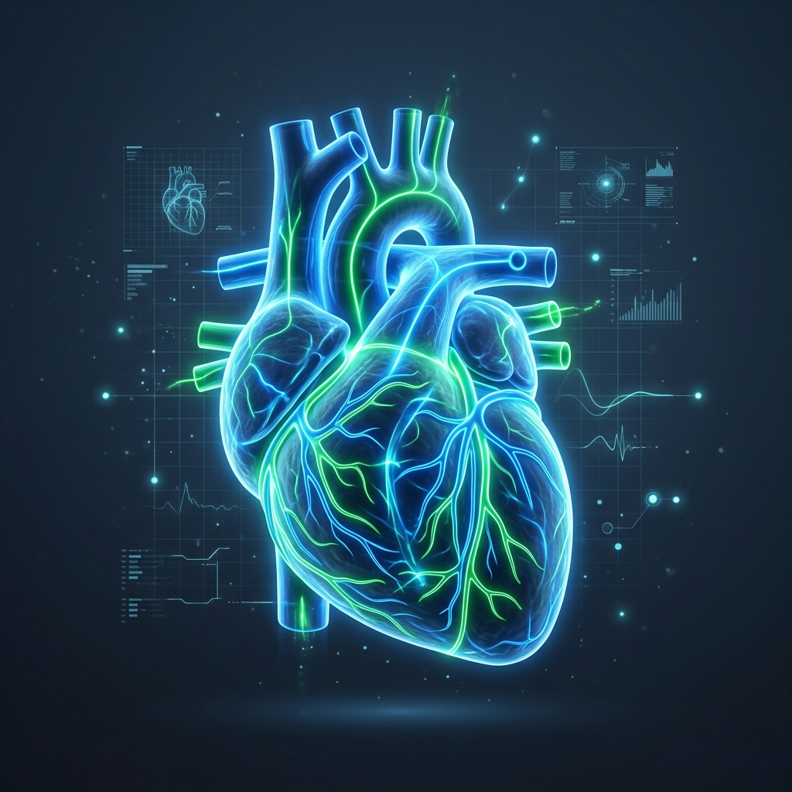
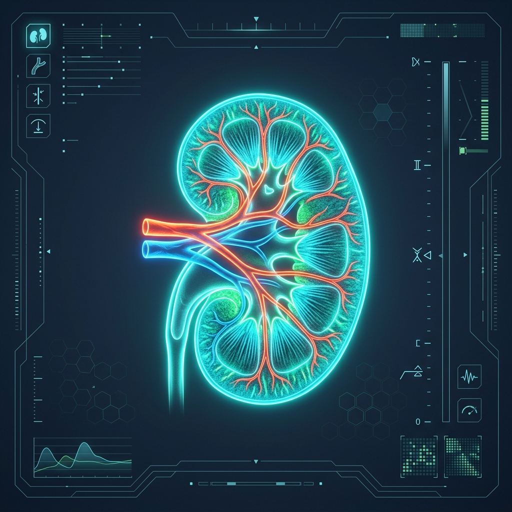

Organ-Specific Health Guide
Select an organ to view associated clinical conditions, symptoms, causes, precautions, and treatments.
Heart Attack (Myocardial Infarction)
Symptoms
Crushing chest pain or pressure, shortness of breath, radiating pain in the left arm, neck, jaw, or back, cold sweats, and severe dizziness.
Causes
Rupture of a cholesterol plaque in a coronary artery, triggering a blood clot that completely blocks oxygenated blood from reaching the heart muscle.
Precautions
Strictly manage blood pressure, avoid trans-fats, exercise moderately, and immediately seek emergency care if chest pain lasts more than 5 minutes.
Cure & Treatment
Medical Emergency. Reversible if treated immediately. Revascularization via emergency balloon angioplasty (stenting) or thrombolytic drugs (clot-busters) to restore blood flow.
Coronary Artery Disease (CAD)
Symptoms
Chest pain (stable angina) during exertion, shortness of breath, and fatigue.
Causes
Gradual cholesterol plaque accumulation (atherosclerosis) narrowing the coronary arteries.
Precautions
Low-sodium diet, regular aerobic exercise, and cholesterol-lowering therapies.
Cure & Treatment
Manageable. Treated with beta-blockers, statins, aspirin, and lifestyle shifts. Advanced cases require coronary bypass surgery (CABG).
Congestive Heart Failure (CHF)
Symptoms
Chronic fatigue, fluid accumulation in the legs and ankles (edema), shortness of breath when lying flat, and dry cough.
Causes
Weakening or stiffening of the heart muscle due to long-term high blood pressure, CAD, or past heart attacks.
Precautions
Strictly limit sodium and daily fluid intake, monitor weight daily, and avoid NSAID pain relievers.
Cure & Treatment
No Cure (Highly Manageable). Controlled via ACE inhibitors, diuretics to remove fluid, beta-blockers, pacemakers (CRT), or heart transplantation.
Curated Natural Remedies (Heart Care)
Widely researched in cardiology to improve coronary blood flow, strengthen myocardial contractions, and regulate mild blood pressure.
Helps prevent blood clotting, reduces arterial plaque accumulation, and naturally lowers LDL cholesterol levels when consumed raw daily.
An essential enzyme found naturally in spinach and broccoli that fuels cellular energy production in the heart muscle and acts as a powerful antioxidant.
Cardiovascular Scan Visualization

Visualizing coronary arterial density and myocardial blood flow. High-tech diagnostic overlay.
Kidney Stones (Nephrolithiasis)
Symptoms
Severe pain in the back and side, radiating to the groin, blood in urine (hematuria), painful urination, and nausea.
Causes
Mineral and acid salts in concentrated urine crystallize and bind together, often due to dehydration or high sodium intake.
Precautions
Drink 3+ liters of water daily, reduce dietary sodium, limit animal protein, and monitor urinary pH.
Cure & Treatment
Fully Curable. Small stones pass with hydration and alpha-blockers. Large stones are cured using extracorporeal shock wave lithotripsy (ESWL) or laser ureteroscopy.
Chronic Kidney Disease (CKD)
Symptoms
Uremic frost, swollen ankles/feet (fluid retention), anemia, fatigue, and metallic taste in the mouth.
Causes
Persistent glomerular damage caused by uncontrolled Type 2 Diabetes or chronic hypertension.
Precautions
Maintain blood pressure below 130/80, manage glucose levels, limit protein intake, and avoid NSAIDs.
Cure & Treatment
Irreversible. Progresses through 5 stages. Managed with blood pressure control (ACE inhibitors) and dietary shifts. Stage 5 requires hemodialysis or kidney transplant.
Glomerulonephritis (Kidney Inflammation)
Symptoms
Pink or dark cola-colored urine (blood in urine), foamy urine due to excess protein (proteinuria), and high blood pressure.
Causes
Immune response triggers, such as post-streptococcal infection, lupus, or vasculitis, causing inflammation in the glomeruli.
Precautions
Treat streptococcal throat infections immediately with antibiotics, and reduce dietary sodium/potassium.
Cure & Treatment
Curable depending on cause. Treated with corticosteroids to suppress immune inflammation, immunosuppressants, and blood pressure control.
Curated Natural Remedies (Kidney Care)
Citric acid in lemons binds with calcium to prevent stone formation and break down small crystals, while olive oil lubricates the urinary tract to ease passage.
Acts as an organic diuretic, promoting increased urine production to flush out accumulated toxins and excess uric acid from the kidneys.
Prevents bacteria from adhering to the bladder and renal walls, reducing the incidence of urinary tract infections that can lead to kidney stones.
Renal Ultrasound Scan

Ultrasonic imaging of the renal cortex and calyces. Monitoring for nephrolithiasis and fluid retention.
Glaucoma
Symptoms
Loss of peripheral vision (tunnel vision), severe eye pain, blurred vision, and seeing halos around lights.
Causes
Increased fluid pressure in the eye (intraocular pressure) damaging the optic nerve fibers.
Precautions
Avoid rubbing eyes, limit caffeine, sleep with head slightly elevated, and get regular pressure checks.
Cure & Treatment
Manageable (Irreversible). Vision loss cannot be cured. Eye pressure is lowered and managed using prescription drops, laser trabeculoplasty, or shunt surgery.
Cataracts
Symptoms
Cloudy or blurry vision, faded color perception, double vision in a single eye, and difficulty seeing at night.
Causes
Protein clumping in the eye's lens due to aging, UV exposure, smoking, or diabetes.
Precautions
Wear UV-blocking sunglasses, quit smoking, and maintain optimal blood glucose levels.
Cure & Treatment
Fully Curable. Cured via outpatient surgery where the cloudy lens is removed and replaced with a clear artificial intraocular lens (IOL).
Age-Related Macular Degeneration (AMD)
Symptoms
Gradual loss of central vision, straight lines appearing wavy or distorted, and difficulty recognizing faces.
Causes
Aging-related breakdown of cells in the macula (retina) or abnormal blood vessel growth under the retina (wet AMD).
Precautions
Eat a diet rich in leafy greens, avoid smoking, wear sunglasses, and supplement with AREDS2 vitamins.
Cure & Treatment
Manageable. Dry AMD has no cure but is slowed by vitamins. Wet AMD is managed and partially reversed using anti-VEGF eye injections.
Curated Natural Remedies (Vision Support)
Essential carotenoids that accumulate in the retina, acting as natural blue-light filters and protecting the optic nerve from oxidative stress.
Improves microcapillary circulation in the eyes, enhancing night vision and reducing macular degeneration risks.
Retinal Fundus Scan
Fundus visualization mapping cup-to-disc ratio and vascular branches. Optic nerve check.
Pneumonia
Symptoms
Chest pain when breathing/coughing, fever, chills, coughing up thick phlegm, and shortness of breath.
Causes
Bacterial, viral, or fungal infection inflating the lung air sacs (alveoli) with fluid or pus.
Precautions
Get pneumococcal and flu vaccines, wash hands frequently, avoid smoking, and maintain high respiratory hygiene.
Cure & Treatment
Fully Curable. Cured using antibiotics (e.g. Azithromycin) for bacterial infections, or antivirals. Supported by hydration, rest, and fever management.
Bronchial Asthma
Symptoms
Wheezing, shortness of breath, chest tightness, and coughing (particularly at night or during exercise).
Causes
Chronic airway inflammation and hypersensitivity to environmental triggers (allergens, smoke, cold air).
Precautions
Identify and avoid triggers, keep a rescue inhaler close, and monitor peak expiratory flow.
Cure & Treatment
Manageable (No permanent cure). Controlled with daily inhaled corticosteroids (preventers) and short-acting beta-agonists (Albuterol rescue inhalers).
COPD (Chronic Obstructive Pulmonary Disease)
Symptoms
Progressive shortness of breath, chronic cough with mucus (smoker's cough), and frequent chest infections.
Causes
Long-term exposure to lung irritants, most commonly tobacco smoke, causing emphysema and chronic bronchitis.
Precautions
Quit smoking immediately, avoid second-hand smoke, and get annual flu/pneumonia vaccinations.
Cure & Treatment
No Cure (Progressive). Managed with long-acting bronchodilators, inhaled steroids, pulmonary rehabilitation, and supplemental oxygen therapy.
Curated Natural Remedies (Respiratory Support)
Eucalyptol acts as a powerful natural expectorant, breaking down thick mucus in the bronchial tubes and relaxing airways during steam inhalation.
Thyme contains thymol, a volatile oil with strong antibacterial properties that relieves chest spasms, while honey coats the throat to soothe coughing.
Lung X-Ray Scan
Chest radiograph visualization. Assessing pleural cavity, bronchial density, and infiltration.
Stroke (Cerebrovascular Accident)
Symptoms
Sudden numbness or weakness in the face/arm/leg, difficulty speaking or understanding, confusion, and loss of coordination.
Causes
Blocked artery cutting off blood (Ischemic Stroke) or a ruptured blood vessel causing bleeding in the brain (Hemorrhagic Stroke).
Precautions
Manage hypertension, lower cholesterol, control blood glucose, avoid high-stress triggers, and take anticoagulants if prescribed.
Cure & Treatment
Time-Critical Emergency. Ischemic stroke is treated/reversed using tissue plasminogen activator (tPA) within 4.5 hours, or mechanical thrombectomy. Physical therapy is vital for neurological recovery.
Alzheimer's Disease
Symptoms
Progressive memory loss, disorientation, difficulty performing familiar tasks, and changes in mood and personality.
Causes
Abnormal build-up of amyloid plaques and neurofibrillary tau tangles, causing progressive death of brain neurons.
Precautions
Engage in cognitive training, maintain a Mediterranean diet, exercise regularly, and manage cardiovascular risk factors.
Cure & Treatment
No Cure (Progressive). Managed with cholinesterase inhibitors (Donepezil) and NMDA antagonists. Monoclonal antibodies (e.g., Leqembi) are used to slow cognitive decline in early stages.
Parkinson's Disease
Symptoms
Resting tremors (pill-rolling), muscle rigidity, slow movements (bradykinesia), and impaired posture/balance.
Causes
Loss of dopamine-producing neurons in the substantia nigra region of the brain.
Precautions
Stay physically active, avoid exposure to pesticides, and practice speech and balance exercises.
Cure & Treatment
No Cure (Manageable). Symptoms are managed with dopamine replacement therapy (Levodopa/Carbidopa) and dopamine agonists. Deep Brain Stimulation (DBS) is used for advanced motor symptoms.
Curated Natural Remedies (Neuro-Protection)
Herbs that promote microcirculation in cerebral capillaries, improving oxygen delivery to brain cells and supporting cognitive recovery.
A highly bioavailable anti-inflammatory that crosses the blood-brain barrier, reducing neuroinflammation and protecting neurons from oxidative damage.
Brain CT Scan
Transaxial CT slice. Mapping ventricular structures, cerebral hemispheres, and ischemic zones.
Fatty Liver Disease (NAFLD)
Symptoms
Usually asymptomatic in early stages. Can cause fatigue, mild discomfort in the upper right abdomen, and elevated liver enzymes.
Causes
Excessive fat accumulation in hepatocytes, strongly linked to obesity, insulin resistance, and high triglycerides.
Precautions
Eliminate high-fructose corn syrup, reduce intake of simple carbohydrates, avoid alcohol entirely, and limit hepatotoxic drugs.
Cure & Treatment
Fully Reversible (Curable). The primary cure is gradual weight loss (7-10% of body weight) through calorie restriction and physical exercise. There are no approved medications; lifestyle modification is the definitive cure.
Viral Hepatitis (Hepatitis B & C)
Symptoms
Jaundice (yellowing of skin and eyes), dark urine, extreme fatigue, nausea, and abdominal discomfort in the upper right quadrant.
Causes
Infection by Hepatitis B (HBV) or Hepatitis C (HCV) viruses, causing acute or chronic hepatic inflammation.
Precautions
Receive HBV vaccination, avoid sharing needles/razors, and practice safe sex.
Cure & Treatment
Hepatitis C is Curable. Cured in 95%+ of cases using 8-12 weeks of Direct-Acting Antiviral (DAA) tablets. Hepatitis B is manageable but not curable; controlled with long-term antivirals.
Liver Cirrhosis
Symptoms
Easy bruising/bleeding, fluid accumulation in the abdomen (ascites), confusion (hepatic encephalopathy), and jaundice.
Causes
Late-stage scarring (fibrosis) of the liver caused by long-term alcohol abuse, chronic hepatitis, or advanced NAFLD.
Precautions
Strictly avoid alcohol, manage underlying viral hepatitis, and maintain a low-sodium diet to prevent ascites.
Cure & Treatment
Irreversible. Scar tissue cannot be undone. Treatment focuses on stopping progression (stopping alcohol, antivirals). End-stage cirrhosis is cured only via a liver transplant.
Curated Natural Remedies (Hepatoprotective)
A clinically backed herb that stabilizes hepatocyte membranes, stimulates protein synthesis for liver regeneration, and reduces lipid peroxidation.
Helps metabolize fats stored in the liver and improves insulin sensitivity when taken (1 tbsp in warm water) before meals.
Hepatic Ultrasound Scan
Abdominal sonography. Measuring liver echo-texture, portal vein flow, and gallbladder patency.